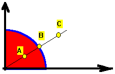
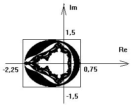
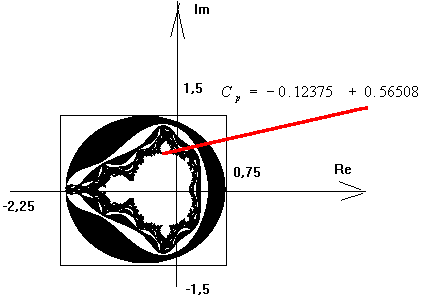
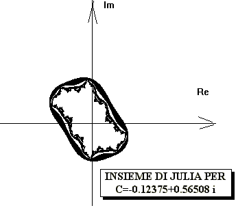
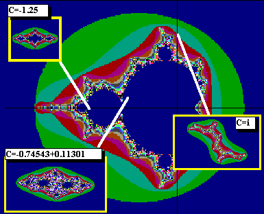
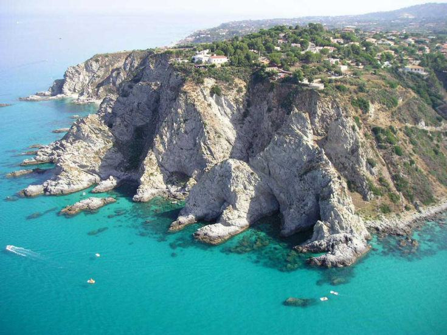
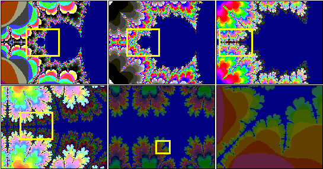

I FRATTALI, FRONTIERE DEL CAOS
La
parola fractal (in italiano frattale) è stata coniata nel
1979 da Benoit Mandelbrot, un matematico dell'IBM.
Due
proprietà principali di tali oggetti sono la self-similarity
(l'autosomiglianza) e la fractional dimension (dimensione
frazionaria o frattale).
L'autosomiglianza
Una figura viene chiamata autosimile se può essere suddivisa in un gran numero di parti ognuna delle quali è un'esatta replica in scala ridotta dell'originale. Alcuni esempi di tali figure, chiamate snowflakes curves (curve a fiocco di neve), sono state inventate circa cento anni fa.
La curva a fiocco di neve si ottiene mettendo insieme un numero infinito di triangoli equilateri sempre più piccoli. La figura finale ha in comune con un fiocco di neve sia la simmetria che la delicatezza.
La frontiera (contorno) di tale figura è in effetti quella che viene chiamata curva a fiocco di neve. Non è autosimile nella sua interezza ma è composta di tre parti, identiche a meno della scala, ed ognuna autosimile.
L'esempio forse più noto è una linea di costa. Contrariamente alle curve matematiche di solito studiate in fisica, che sembrano molto regolari (diritte) se sufficientemente ingrandite, una linea costiera appare piena di rientranze ed estroflessioni indipendentemente dalla scala utilizzata.
La dimensione frazionaria o frattale
La dimensione frazionaria o frattale è un concetto più raffinato. L'idea fondamentale è che entità come la curva a fiocco di neve siano in qualche senso unidimensionali, ma al tempo stesso troppo circonvolute per poter essere chiamate curve nel senso corrente in matematica. Per trovare la dimensione della curva a fiocco di neve si procede in questo modo:
-
si prende un triangolo con lati di lunghezza 1;
-
a metà di ciascun lato si aggiunge un nuovo triangolo di lato pari a 1/3 di quello del triangolo precedente;
-
lo stesso si fa per i lati liberi di ciascun triangolo.
Ad ogni passaggio la lunghezza del confine si incrementa costantemente di 1 (da 3 a 4) e quindi tende all'infinito, nonostante che l'area della figura frattale rimanga inferiore all'area del cerchio circoscritto al triangolo di partenza. La dimensione viene calcolata in questo caso come rapporto fra i logaritmi.
D = log 4 / log 3 = 1.2628...
Autosomiglianza e dimensioni frattali tendono ad andare di pari passo.
L'insieme di Mandelbrot
L'iterazione

L'iterazione è il procedimento fondamentale che permette di studiare, con il computer, l'evoluzione di un modello matematico.
L'iterazione ha inizio a partire da un valore iniziale, detto seme, che rappresenta lo stato iniziale del sistema. Quando lo stato del sistema è descritto da due variabili, è rappresentabile con un punto su un piano; quando le variabili di stato sono tre abbiamo un punto in uno spazio a tre dimensioni, e così via.
Lo spazio nel quale viene rappresentata l'evoluzione del sistema è chiamato spazio delle fasi.
Una volta definite le operazioni che regolano il procedimento iterativo, lo stato finale dipende solo dallo stato iniziale, ossia dal punto rappresentativo dello stato iniziale del sistema. Il punto rappresentativo, durante l'evoluzione del sistema, percorre una traiettoria nello spazio delle fasi.
Traiettoria del punto rappresentativo dello stato di un sistema
Facciamo un esempio. L'iterazione che prende un punto P del piano, ne calcola la distanza dall'origine, ed elevandola al quadrato ottiene il punto successivo, e così via per un numero infinito di volte, conduce ad una frontiera molto semplice, costituita dalla circonferenza di raggio 1. Tutti i punti interni alla circonferenza finiranno con il convergere verso l'origine, tutti i punti esterni alla circonferenza fuggono verso l'infinito, tutti i punti sulla circonferenza rimarranno sulla circonferenza. I punti sulla circonferenza sono la frontiera tra due regioni che presentano un comportamento dinamico radicalmente diverso.

Il punto A precipita nell'origine, il punto B resta sempre dove si trova, il punto C fugge verso l'infinito. I punti che precipitano sull'origine sono colorati in rosso. In blu i punti della fontiera.
Le immagini frattali non sono altro che rappresentazioni di questo tipo, le quali presentano una caratteristica aggiuntiva, che le rende estremamente interessanti: nel caso dei frattali, la frontiera tra regioni di punti che presentano un comportamento dinamico diverso, è molto strana, di una stranezza che la fa apparire complicata, ma che nasconde qualcosa di più della semplice complicazione, qualcosa di concettualmente nuovo, che impareremo a chiamare complessità.
L'esempio successivo è fondamentale. Esso, infatti, ci introduce nel mondo dei frattali. Supponiamo di avere un sistema, per il quale abbiamo ricavato un modello matematico che, una volta discretizzato, conduce alla formula iterativa seguente:
Zi+1 = Zi2 + C
In cui Z e C sono due numeri complessi. Per C=0, la situazione è identica a quella dell'esempio precedente: Il confine tra l'insieme dei punti per cui l'iterazione diverge e l'insieme dei punti per cui l'iterazione converge verso un punto fisso (l'origine), è la circonferenza di raggio unitario del piano complesso.
Per il momento assumiamo che il valore iniziale di Z, che d'ora in avanti chiameremo seme, sia sempre zero. Il nostro scopo diventa allora quello di studiare l'evoluzione dell'iterazione precedente al variare del parametro C, sempre con lo stesso seme.
Ovviamente, poiché l'iterazione non può essere condotta fino all'infinito, occorre imporre un limite. Assumiamo dunque di ripetere l'iterazione per 150 volte, e di discriminare i valori di C per cui, dopo 150 iterazioni, il modulo del numero complesso ottenuto è minore di una certa quantità, per esempio minore di 2. Il parametro C viene fatto variare all'interno di un rettangolo. Assumendo come vertici del rettangolo gli estremi (-2.25,0.75) sull'asse reale e (-1.5,1.5) sull'asse immaginario, e di colorare in nero i punti (valori di C) per cui dopo 150 iterazioni il modulo è maggiore di 2, si ottiene la seguente figura:

Si tratta, evidentemente, dell'insieme di Mandelbrot in bianco e nero. Per ottenerlo a colori il trucco è quello di assegnare un colore per i punti che soddisfano la condizione dopo 150 iterazioni, un altro colore per quelli che la soddisfano dopo 149, e così via.
Prendiamo ora un punto qualsiasi sull'insieme di Mandelbrot e Indichiamolo con il simbolo Cp. Il suo colore, in questa discussione, è ininfluente. Sia, ad esempio: Cp = -0.12375+0.56508i

Ripetendo l'iterazione con questo valore di C, e facendo variare invece Z, otteniamo una nuova figura. Al solito ogni punto (ogni valore di Z) viene colorato, ad esempio in bianco o nero, oppure con una scelta tra più colori, eseguendo un test sul modulo di Z dopo un certo numero di iterazioni.
Si ottiene, in tal modo, una nuova figura, che è chiamata insieme di Julia, dal nome di Gaston Julia, un matematico che, durante la prima guerra mondiale, insieme a Pierre Fatou, ne studiò le proprietà.

Con un altro valore di C si sarebbe ottenuta una forma diversa dell'insieme di Julia associato. In sostanza, quello che per il momento ci preme sottolineare, è che l'insieme di Mandelbrot costruito con il seme: Z0=0 può funzionare come indice degli insiemi di Julia. Come abbiamo visto, questi si ottengono assegnando a C un valore scelto sull'insieme di Mandelbrot, e facendo invece variare Z, all'interno di un rettangolo sufficientemente ampio del piano complesso.
N.B.: con il termine "sufficientemente ampio" non si intende un intervallo di dimensioni maggiori di una soglia precisa, dal momento che le relazioni tra l'insieme di Mandelbrot e gli insiemi di Julia sono di tipo topologico, ossia fanno riferimento alla forma, e non al dato quantitativo. Il rettangolo deve essere sufficientemente ampio in relazione al tipo di condizione imposta (numero di iterazioni e numero di possibili colori), affinché si sia in grado di cogliere a vista la struttura topologica degli insiemi ottenuti.

Insiemi di Julia corrispondenti a punti dell'insieme di Mandelbrot
L'autosomiglianza di scala
E' importante affrontare il problema del nome che viene dato a queste rappresentazioni. Esse vengono chiamate frattali, dal latino fractus, che significa spezzato. In effetti, la prima cosa che ci colpisce in queste immagini è la forma dei contorni, che appare estremamente frastagliata. Vi sono anche, tuttavia, delle ampie zone uniformi. Quale è la ragione di tutto ciò?

E' come se, in alcune parti della figura, si fossero scontrati due partiti, uno che voleva usare un colore, e un altro partito che voleva usarne uno diverso. E' un po' come quando il mare e la terraferma si confrontano, ora vince l'uno ora l'altro, e il risultato di questa competizione è la costa frastagliata, colma di insenature, apparentemente senza alcuna regolarità. A ben pensarci, tutta la natura è impegnata in una grande lotta, intrapresa tra tutte le sue parti. Riflettiamo ancora sulla natura della costa di un continente, che possiamo definire come la regione di confine tra il mondo acquatico e il mondo delle terre emerse. In questa regione non vi è un dominatore assoluto: ad ogni livello di scala, la costa mantiene questa sua proprietà di zona di confine.
A seconda del gioco delle correnti marine, dei fenomeni di erosione, e di tutti gli altri eventi che concorrono alla dinamica del sistema mare-terraferma in un certo tratto di costa, questa può assumere, ad una certa scala dimensionale, forme diverse: può essere frastagliata, oppure lineare. Tuttavia, ad una scala dimensionale diversa, una costa molto frastagliata può apparire lineare, e, viceversa, una costa lineare può mostrare un numero insospettato di insenature e sporgenze. Ad ogni livello di scala la situazione può cambiare, e magari possiamo scoprire che un determinato motivo, ad esempio un golfo di forma semicircolare, compare e scompare in funzione della scala di rappresentazione adottata.
La situazione, sostanzialmente, non cambia se definiamo la zona di confine in modo più astratto, come abbiamo già fatto costruendo l'insieme di Mandelbrot a due colori: In quel caso abbiamo colorato di nero i punti che, dopo 150 iterazioni, erano diventati, in modulo, maggiori di 2, e di bianco tutti gli altri. Con delle condizioni appena più complesse, possiamo colorare la zona di confine con un numero maggiore di colori.
Possiamo interpretare l'insieme di
Mandelbrot come la rappresentazione orografica di un atollo, in cui i
colori sono proporzionali al livello delle terre emerse e alla
profondità dei fondali. Accanto ad ampie zone regolari, notiamo che
la zona di confine presenta un alto grado di

Si noti la somiglianza alle diverse scale. Questo fenomeno è detto, per l'appunto, autosomiglianza di scala. Il fenomeno dell'autosomiglianza di scala ricorda i successivi ingrandimenti della fotografia di una costa. E' impossibile capire, dalla sola forma, a che livello di ingrandimento la foto è stata scattata.
L'autosomiglianza di scala è un fenomeno molto diffuso in natura, e, a ben pensare, appare strano che non sia stato notato per così tanto tempo. Senza l'aiuto della matematica, forse, avrebbe continuato a sfuggire all'osservazione filosofica, e sarebbe stato un vero peccato, poiché si tratta di un concetto ricco di interpretazioni, che induce ad ipotesi molto suggestive. Esso sembra suggerirci che, sotto l'apparente diversità delle forme, si cela l'infinita ripetizione di un numero finito di motivi elementari, l'alfabeto del linguaggio della natura.
Questa immagine frattale, ottenuta con un semplice algoritmo, sembra composta da un numero infinito di minuscole copie di se stessa.
Benoit B. Mandelbrot, (Varsavia 1924), uno dei padri fondatori della geometria frattale